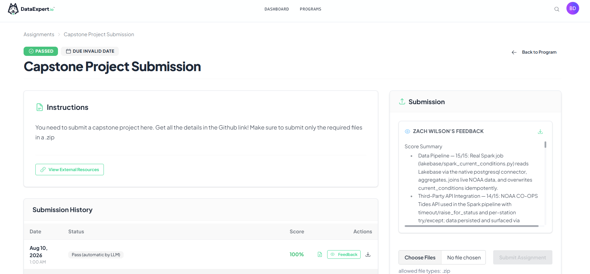
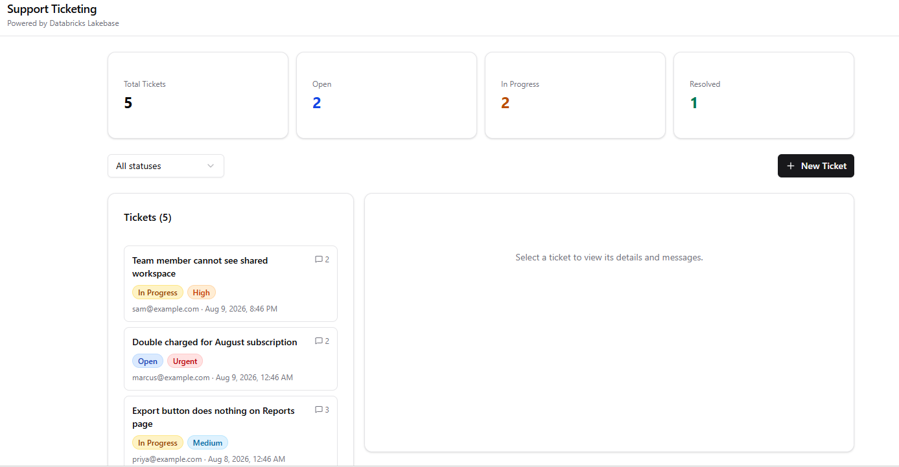
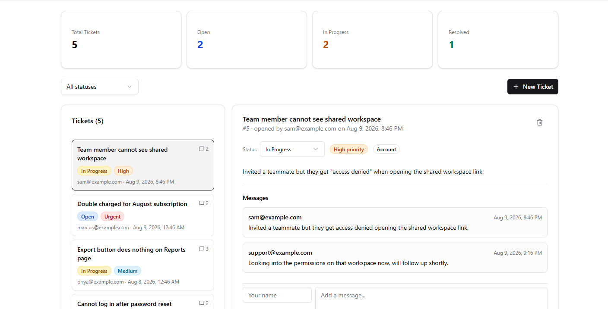
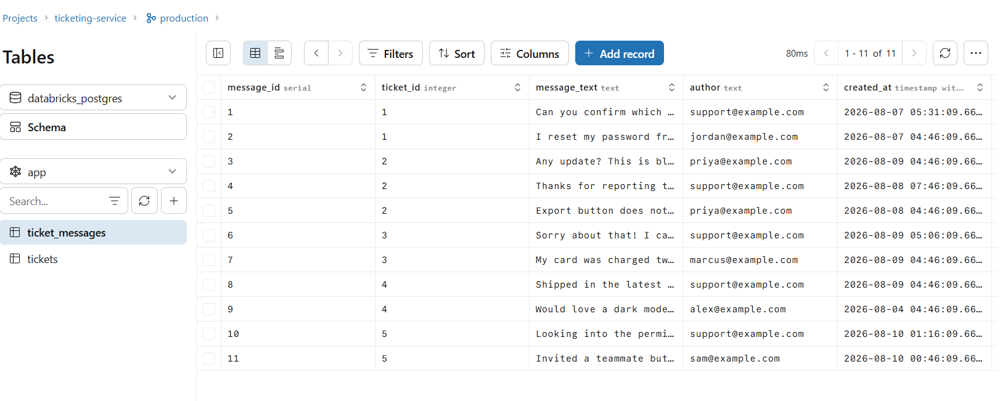

Agent Bricks agents with real write tools, a Spark pipeline over a live
NOAA feed, Lakebase doing double duty as an OLTP store and a pgvector
index, an MCP server, two deployed Databricks Apps, and an MLflow model
registered in Unity Catalog. No synthetic data, no mocked
deployments — every number on this page came out of a real run.
Agent Bricks agent over real exposure scores for 7,717 coastal buildings
across 8 regions, sourced from my own
surge-exposure
pipeline. It doesn't just read — it flags buildings for inspection with
a real write tool, and it can tell you exactly how much to trust the
number it just gave you, straight from a validation study that's
unusually honest about its own limits (r=0.37 / r=0.52 against 48,105
real Hurricane Ian NFIP claims).
repo →app → SSO-gated (see EVIDENCE.md for proof it runs)
Live tide data lands in Lakebase via Spark; the agent reads Lakebase and a vector index of methodology docs, then acts through six Unity Catalog function tools — one of which writes an inspection flag straight back to Lakebase.

Graded, not self-assessed: DataExpert.io's capstone rubric — Zach Wilson's automated feedback on the real Spark pipeline and NOAA CO-OPS integration.
No tool can edit or delete a score — the agent can't drift from the source pipeline no matter how it's prompted.
agent/eval/eval_cases.md checks calibration, not just "an answer came back" — e.g. it must refuse to call a "none" score in New Orleans "safe."
Lakehouse Federation to Lakebase is read-only, so the one write tool uses direct psycopg2 instead.
New UC managed tables get Deletion Vectors + Row Tracking by default — left on, they silently stall Vector Search delta-sync.
02 / 05
Weather MCP Agent
Databricks AppsMCPAgent BricksCI
A FastMCP weather server exposing derived-judgment tools — not just a
forecast, but "do I need an umbrella," with the actual threshold and
numbers behind the call. Deployed as a Databricks App with Agent Bricks
registered against it as an external MCP tool
(databricks branch);
the same server also runs against a free local Ollama model or the
Claude API, so it's verifiable with zero cloud dependency.
Every HTTP call funnels through one broker module — the reason the test suite mocks requests.get and needs no network to pass.
# python demo/local_agent_ollama.py "Should I bring an umbrella in Seattle today?"# free local llama3.1:8b — no API key, no cost[tool_call] predict_umbrella_needed({"date": "2023-12-01", "location": "Seattle"})
[tool_result] {"error": "No forecast available for 'Seattle' on '2023-12-01'
(forecast window is the next 10 days)."}
[assistant] I'm having trouble getting a weather report for Seattle. Could
you please clarify or try again? I'll do my best to help once we get a
valid location and date.
The small local model guessed a stale training-era date — the tool caught it and the agent surfaced that instead of inventing an answer.
Same system prompt and guardrails across all three runtimes: Agent Bricks, Claude API, and local Ollama.
03 / 05
Weather Lakebase App
LakebasepgvectorHNSWFlask
Free-text NWS alerts and forecasts ("A Flash Flood Warning means
rapid-onset flooding is imminent...") turned into a searchable
knowledge base: Lakebase holds the raw documents, a
sentence-transformers model embeds them into
pgvector, and a small Flask API serves upsert-safe sync
plus cosine-similarity search.
Alerts dedupe on NWS's own id; forecast periods (which have none) key off a hash of location + period + start time — re-running sync leaves row counts unchanged.
Verified live: 44 documents synced (incl. a real Flash Flood + Tornado Warning), 54 chunks embedded.
Top-ranked results confirmed topically correct for flood/tornado/heat/sunny-weather queries.
Empty index returns {"results": []}, never a 500 — checked before the first embed job ever ran.
Known gap, stated plainly: no content-hash trigger, so an unchanged-id forecast whose text changes won't re-embed.
04 / 05
Ticketing Service
Databricks AppsAppKitLakebaseAsset Bundles
A support-ticketing Databricks App built on AppKit — React, TypeScript,
and Tailwind on the client; Express on the server; Lakebase as the
transactional store — deployed with Databricks Asset Bundles rather
than a hand-run script.
The bundle owns deployment end to end — the Lakebase resource is scoped to CAN_CONNECT_AND_CREATE, not a hand-managed connection string.

Dashboard: 5 real tickets, filterable by status.

Detail view: status/priority controls plus a real thread.

Same data in Lakebase itself — Postgres rows, not a mock.
Full toolchain, not a demo script: typecheck, ESLint, Prettier, Vitest, and Playwright smoke tests.
Lakebase plugin wired declaratively through databricks.yml, scoped per-resource rather than globally.
05 / 05
Surge Exposure Risk Model
MLflowModel RegistryModel ServingUnity Catalog
Does an actual trained model beat Surge Exposure Advisor's hand-picked
heuristic score, checked against real FEMA flood claims? Fetches
140,732 real NFIP claims live from FEMA's public OpenFEMA API, joins
them onto the same 7,717 real buildings on a lat/lon grid — measuring
FEMA's real privacy-generalized grid size from the data rather than
assuming one — and MLflow-tracks a trained model against the
heuristic with a cell-grouped cross-validation split so labels can't
leak between train and test.
repo →registry/serving → needs a live Databricks session (code included, documented, not yet run against the workspace)
Two real datasets, joined on a grid whose size was measured from the data, not assumed — feeding an MLflow-tracked model on its way to Unity Catalog and Model Serving.
# python train_model.py (local, sqlite-backed MLflow, zero Databricks auth)
Training on 7717 buildings across 13 grid cells.
CAUTION: only 13 cells (~1 per region at this grid size) -- a model can
'win' mainly by learning per-region average payouts rather than a real
surge/severity relationship. Read cv_r improvements with that in mind.
[target_frequency]
hand-picked heuristic: r = 0.012
trained GBM (5-fold CV): r = -0.019
-> both near zero -- no reliable signal for this target at 13 cells.
[target_severity]
hand-picked heuristic: r = 0.471
trained GBM (5-fold CV): r = 0.728
-> the trained model beats the heuristic on this data.
Severity heuristic r=0.471 reproduces the original study's r=0.52 (different county mix, all-time claims) — a cross-validation of that methodology, not just this model.
The caution about small cell counts is printed automatically by the script whenever n_cells < 30, not just written in the README after the fact.
Fully reproducible with zero Databricks auth up through local training; only Unity Catalog registration and Model Serving need a live workspace session.
Ships a real, signature-matched predict_claim_risk Unity Catalog function as an opt-in 7th tool for the already-deployed Surge Exposure Advisor agent.
Capability matrix
Which Databricks (and adjacent) surfaces each project actually exercises.
Surge Exposure
Weather MCP
Weather Lakebase
Ticketing
Risk Model
Agent Bricks
Unity Catalog functions
Vector Search
Lakebase (Postgres)
pgvector / semantic search
Spark pipeline
Lakehouse Federation
MCP server
Databricks Apps
Asset Bundles
MLflow tracking
Model Registry / Serving
Live third-party API
Automated tests
Lessons, learned the hard way
Real production friction from building on Databricks — not documented anywhere until it broke something.
$ lessons --project surge-exposure-agent
01execute_statement is a stateless SQL session — USE CATALOG / USE SCHEMA don't carry across calls. Pass catalog=/schema= explicitly every time.
02New UC managed tables get Deletion Vectors + Row Tracking on by default — left on, they silently stall Vector Search delta-sync. Disable both in TBLPROPERTIES.
03spark.read.jdbc / df.write.jdbc are read-only on serverless compute (UNSUPPORTED_DATA_SOURCE_WRITE). format("postgresql") works both directions.
04Importing psycopg2 inside a serverless Spark notebook SIGABRTs the kernel outright. The native postgresql data source doesn't have this problem.
05NOAA tidal-river stations only support MSL/NAVD, not MLLW — use MSL uniformly instead of special-casing one station.
06Lakehouse Federation to Lakebase is read-only. Foreign-table writes get PERMISSION_DENIED — the one write tool needs direct psycopg2, not federation.
07dbutils isn't available inside a UC Python function's sandbox, or in Databricks Apps. Use WorkspaceClient().secrets.get_secret() with the app's own service principal.
None of this is in the docs until you hit it. Two examples that shaped the design of Surge Exposure Advisor:
Guardrails via omission. There's no tool that can edit a building's score or delete a flag — the agent has no path to alter the underlying data no matter how it's prompted, so correctness doesn't depend on the model behaving.
Same data layer for human and agent.lakebase/db.py's functions are the spec the UC function tools were built from — the agent can't drift from what the Streamlit app itself does, because they call the same code.